Installation serveur WEB¶
Mise à jour de Packet Tracer¶
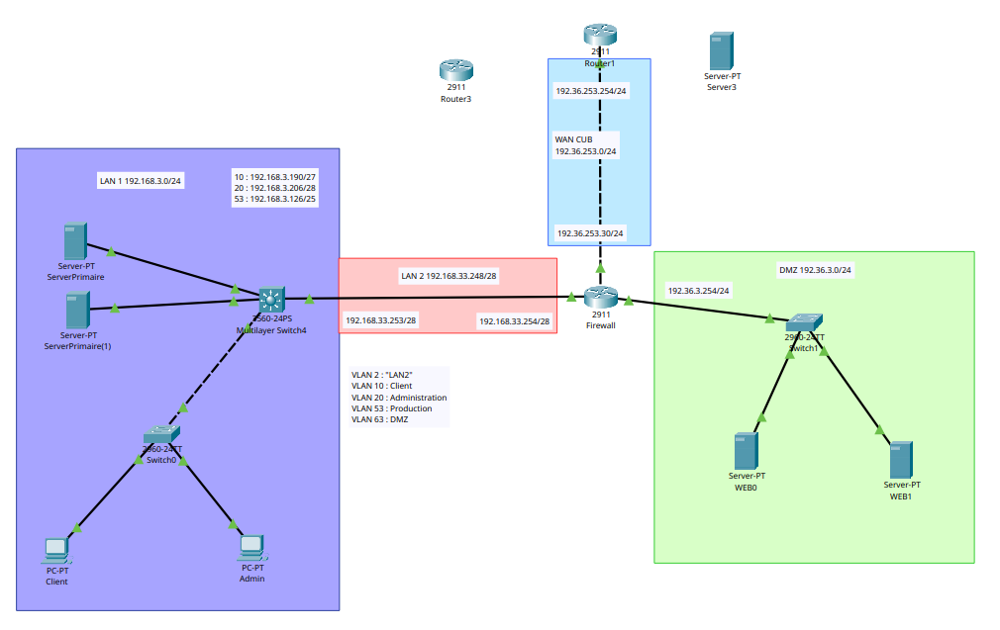
Configuration des serveurs¶
Mise à jour du système et installation des paquets nécessaires¶
sudo apt update && sudo apt upgrade -y
sudo apt install zip apache2 php mariadb-server php-mysql libapache2-mod-php
Configuration du VirtualHost WordPress¶
<VirtualHost *:80>
ServerName www1.californie.cub.sioplc.fr
DocumentRoot /var/www/wp
DirectoryIndex index.php
<Directory "/var/www/wp">
Options -Indexes
AllowOverride All
Require all granted
</Directory>
ErrorLog ${APACHE_LOG_DIR}/error-wp.log
LogLevel warn;
CustomLog ${APACHE_LOG_DIR}/access.log combined
</VirtualHost>
Désactivation du site par défaut et activation de WordPress¶
Configuration DNS (Bind9)¶
Ajout des enregistrements A et CNAME¶
@ IN SOA ns0.californie.cub.sioplc.fr. admin.californie.cub.sioplc.fr. (
2025111301 ; Serial
1D
1H
1W
3H )
californie.cub.sioplc.fr. IN NS ns0.californie.cub.sioplc.fr.
californie.cub.sioplc.fr. IN NS ns1.californie.cub.sioplc.fr.
ns0 IN A 192.168.3.10
ns1 IN A 192.168.3.11
www0 IN A 192.36.3.20
www1 IN A 192.36.3.21
scanner0 IN CNAME www0
scanner1 IN CNAME www1
Redémarrage du service DNS¶
Vérification¶
Installation de WordPress¶
Téléchargement¶
Création de la base de données¶
sudo mysql
CREATE DATABASE wp_www0_californie_cub;
CREATE USER 'etudiant'@'localhost' IDENTIFIED BY 'etudiant_007';
GRANT ALL PRIVILEGES ON wp_www0_californie_cub.* TO etudiant@localhost;
FLUSH PRIVILEGES;
Déploiement des fichiers¶
sudo unzip latest.zip -d /var/www/wp
cd /var/www/wp
sudo mv wordpress/* /var/www/wp/
sudo rm wordpress/ -Rf
sudo chown -R www-data:www-data /var/www/wp/
Installation Web – Interface WordPress¶
Accéder à :
Choix de la langue¶
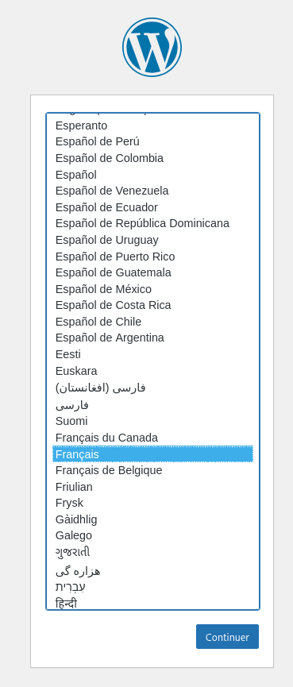
Pré-requis base de données¶
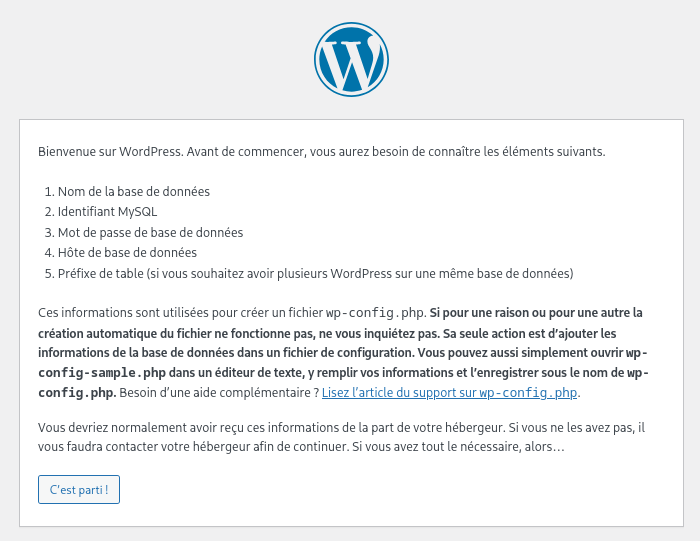
Informations de connexion BD¶
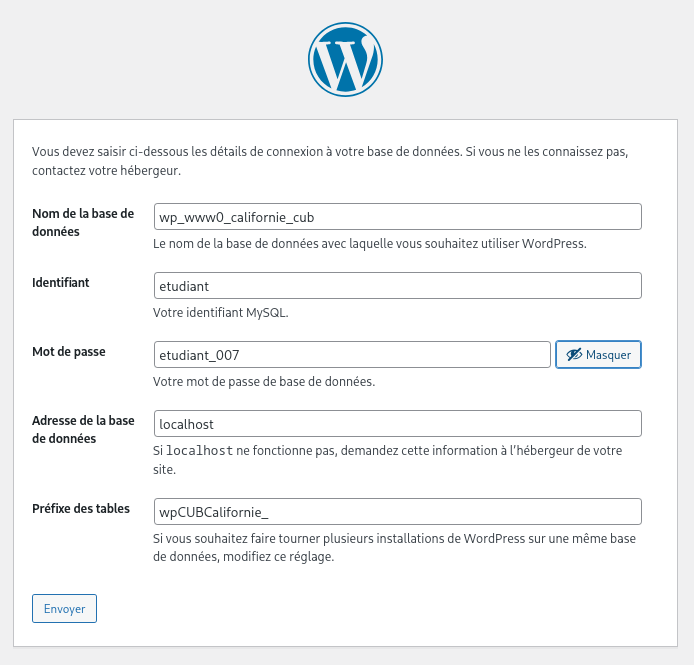
Confirmation de réussite¶
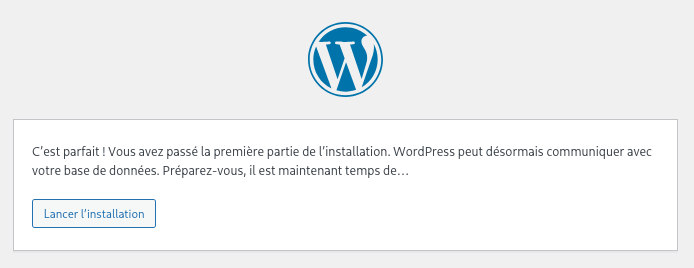
Création du compte administrateur¶
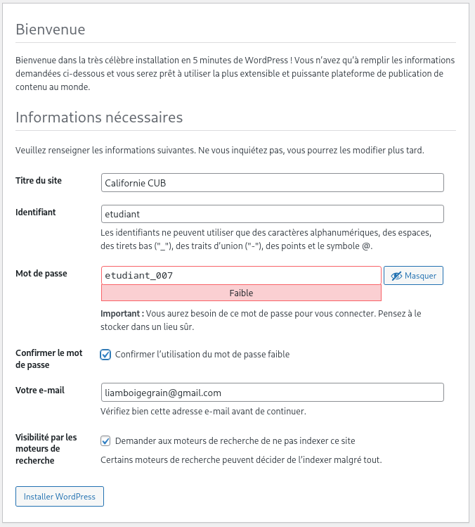
Confirmation installation¶
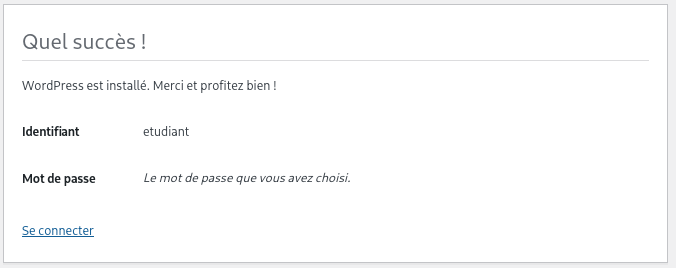
Connexion administration¶
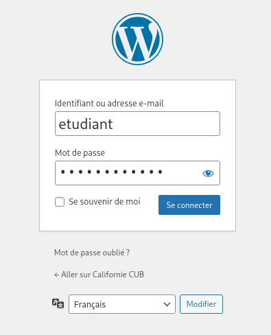
Mise à jour de l’URL du site¶
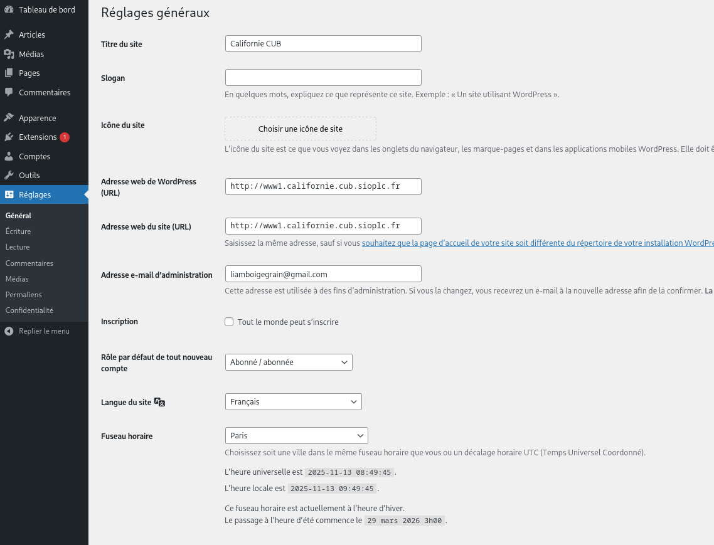
Site fonctionnel¶

Installation du Scanner Web¶
Récupération de l’application¶
Configuration VirtualHost Scanner (HTTP)¶
<VirtualHost *:80>
ServerName scanner1.californie.cub.sioplc.fr
DocumentRoot /var/www/command-attack
DirectoryIndex index.php
<Directory "/var/www/command-attack">
Options -Indexes
AllowOverride All
<RequireAll>
Require ip 192.168.3.192/28
AuthType Basic
AuthName "Zone protégée"
AuthUserFile /etc/apache2/sites-available/scanner1.htpasswd
Require valid-user
</RequireAll>
</Directory>
ErrorLog ${APACHE_LOG_DIR}/error-wp.log
LogLevel warn
CustomLog ${APACHE_LOG_DIR}/access.log combined
</VirtualHost>
Création du fichier d’authentification¶
Activation¶
Site scanner fonctionnel¶
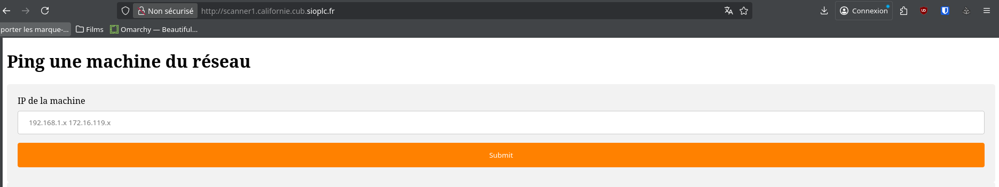
Activation SSL (HTTPS)¶
Activation du module SSL¶
Création des certificats auto-signés¶
Certificat WordPress¶
Common Name :
Certificat Scanner¶
VirtualHost SSL – Scanner¶
<VirtualHost *:443>
ServerName scanner1.californie.cub.sioplc.fr
DocumentRoot /var/www/command-attack
DirectoryIndex index.php
SSLEngine on
SSLCertificateFile /etc/apache2/certs/scanner1.crt
SSLCertificateKeyFile /etc/apache2/certs/scanner1.key
<Directory "/var/www/command-attack">
Options -Indexes
AllowOverride All
<RequireAll>
Require ip 192.168.3.192/28
AuthType Basic
AuthName "Zone protégée"
AuthUserFile /etc/apache2/sites-available/scanner1.htpasswd
Require valid-user
</RequireAll>
</Directory>
ErrorLog ${APACHE_LOG_DIR}/error-wp.log
LogLevel warn
CustomLog ${APACHE_LOG_DIR}/access.log combined
</VirtualHost>
VirtualHost SSL – WordPress¶
<VirtualHost *:443>
ServerName www1.californie.cub.sioplc.fr
DocumentRoot /var/www/wp
DirectoryIndex index.php
SSLEngine on
SSLCertificateFile /etc/apache2/certs/www1.crt
SSLCertificateKeyFile /etc/apache2/certs/www1.key
<Directory "/var/www/wp">
Options -Indexes
AllowOverride All
Require all granted
</Directory>
ErrorLog ${APACHE_LOG_DIR}/error-wp.log
LogLevel warn
CustomLog ${APACHE_LOG_DIR}/access.log combined
</VirtualHost>
Redémarrage¶
Supervision réseau – Écoute du port (SPAN)¶
Configuration sur le switch :
SwitchLv2CUB(config)#monitor session 1 source interface fa0/25 both
SwitchLv2CUB(config)#monitor session 1 destination interface fa0/23
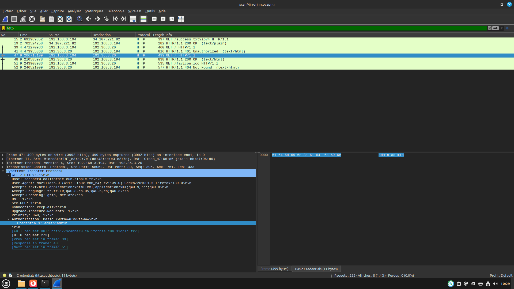
Vérification HTTPS¶
WordPress¶
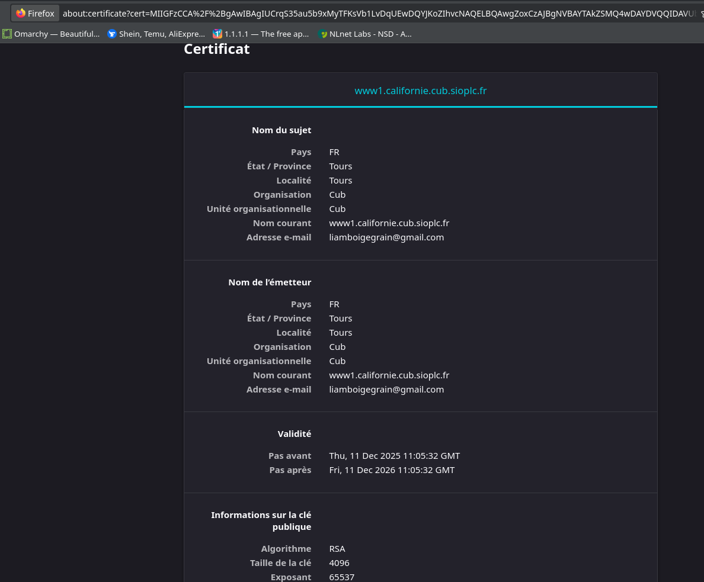
Scanner¶
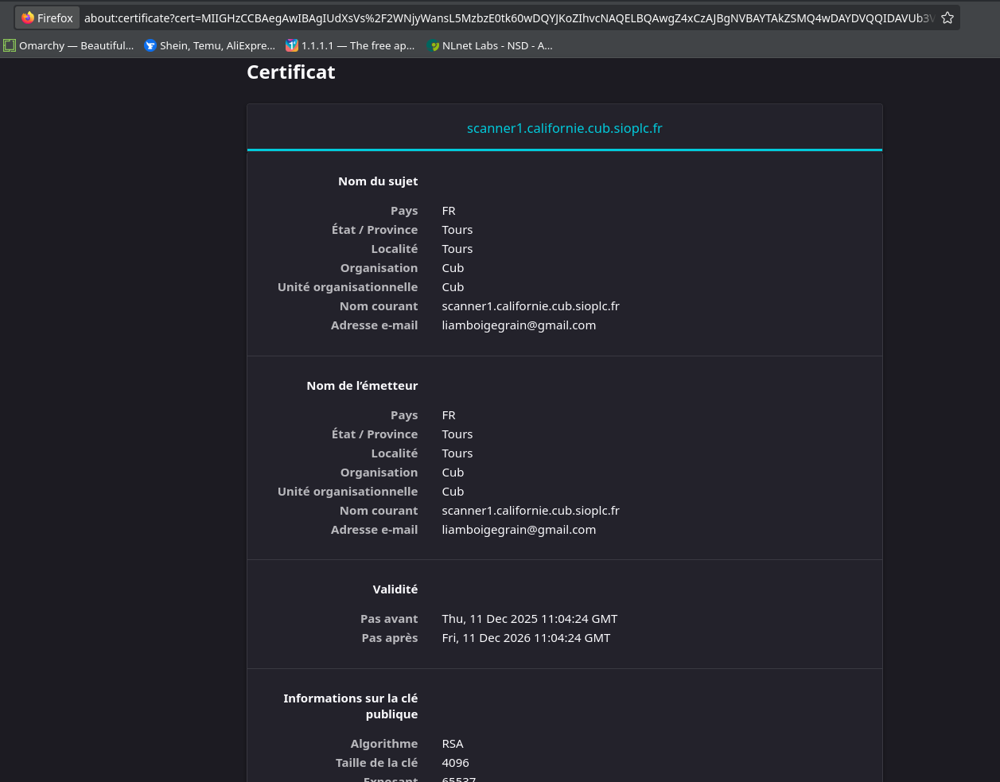